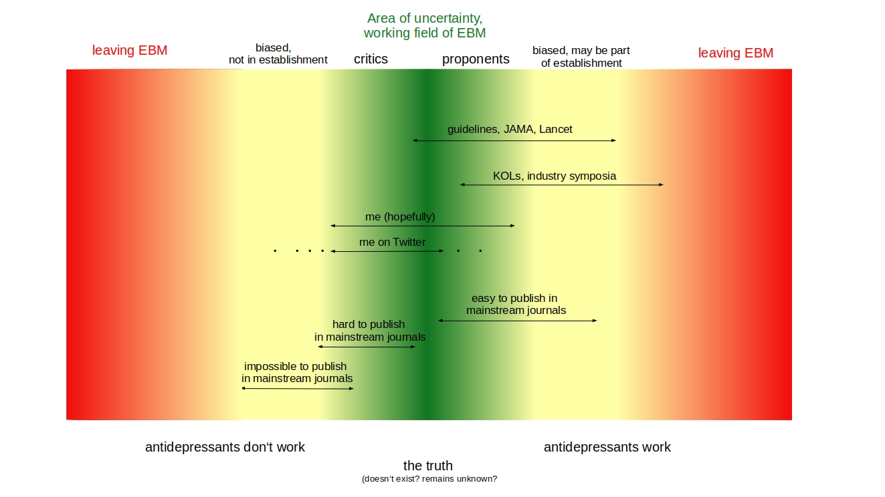

Response to the talk by Lewis et al.
In their talk titled “The antidepressant wars”, Glen Lewis, Tania Gergel, and Edoardo Ostinelli from the Royal College of Psychiatrists, argue that critical views on antidepressants parallel climate change denial, post-truth, trumpism etc. and thus creating discrimination and harm. Issues that I see as deeply problematic and harmful, too. I was provided a recording of this talk and realized that some of our scientific work was misrepresented. The talk also includes too many problematic statements from an evidence-based medicine point of view, so I felt like I need to respond.
A goal of their talk was to provide a nuanced summary of the evidence on antidepressants so to “Be able to explain the evidence for and against antidepressants to patients and their families.” To be fair, Lewis et al. et al. do mention some critical points about antidepressants. For example, the ever increasing rates of prescriptions and long-term use is “alarming”. Or that there are some problems with the evidence base (old trials, industry trials, narrow focus, smaller effect sizes in newer trials). This creates some nuance. However, the overall picture emerging from the talk is still too problematic and does not provide the promised nuance, as I will outline below.
Giving the impression that there is scientific consensus about the efficacy of antidepressants
Lewis et al. claim that there is a lot of evidence of the effectiveness of antidepressants, with the large Cipriani et al. 2018 systematic review of clinical trials as highlight (Cipriani et al., 2018). Despite all this evidence (where all antidepressants were significantly superior to placebo), Lewis et al. wonder why there is still the “massive” controversy. However, when taking into account clinical significance (drug-placebo differences are most likely not clinically meaningful) and method biases (the small effects are likely overestimations of actual effects), a critical view on antidepressants is the logical conclusion. For example that the efficacy is uncertain (Munkholm et al., 2019) or even that, when considering the harms of antidepressants, these meds should not be used (Jakobsen et al., 2019). These conclusions are from respected researchers and were published in BMJ journals. We summarized the controversy, too (Hengartner and Plöderl, 2018).
Misleading reporting and spinning of the PANDA results
The criticism of industry trials from secondary care is a reason for Lewis et al. to bring in the PANDA trial, where Lewis was author of the related publication (Lewis et al., 2019). They tell the audience that, in the PANDA trial, the main benefit of sertraline is for anxiety, where the effects were clinically significant. Later, they also mention the result for a single item outcome where patients were asked if they felt better, where 59% felt better on sertraline and 42% on placebo. For listeners not familiar with the PANDA trial, this sounds like a success story. However, these are typical examples of spin and outcome-switching, two bad research practices. Spin means selective reporting of favorable results and hiding of unfavorable results. Outcome switching means changing the primary outcome with another outcome (with more convenient findings). In this case Lewis et al. did not inform the audience about the pre-specified primary outcome in PANDA, which was the drug-placebo difference in reduction of depression symptoms as measured with the PHQ. This primary outcome was not statistically significantly and very small, with an effect size (ES) of 0.09 at week 6 and 0.18 at week 12. In the appendix, there are a lot of subgroup differences and it can be explored if efficacy is better for severely depressed people, but no such subgroup could be identified. Instead of reporting the results for the primary outcome, Lewis et al. selectively mentioned secondary outcomes with significant drug-placebo differences, but missed to report that the effect sizes were again small (ES < 0.25). Later in the talk, when discussing clinical significance, Lewis et al. said that the efficacy in the PANDA was clinically meaningful for anxiety but “perhaps” not for depression. Both is misleading, because the effects for anxiety were small too, and thus likely not statistically significant. The finding for depression was clearly not significant, neither clinically nor statistically. This kind of spin is also found in the abstract of the original publication in JAMA. Despite that PANDA failed in the primary outcome, authors concluded: “Our findings support the prescription of SSRI antidepressants in a wider group of participants than previously thought, including those with mild to moderate symptoms who do not meet diagnostic criteria for depression or generalized anxiety disorder”. This should never have passed peer review. We summarized the criticism in a letter (Hengartner et al., 2020).
Moreover, when giving a talk about the efficacy of antidepressants, instead of relying on results from a single RCT, the audience should have an overview on other existing “real world” studies.
Lewis et al. also refered to the recent FDA study (Stone et al., 2022) where 15% more on antidepressants compared to placebo fell into the latent class of “large response” with a mean symptom reduction of 16 points on the Hamilton depression rating scale. As many others, Lewis et al. made the error of interpreting this as “15% difference in patients experiencing a large response”. This is erroneous because the latent classes are substantially overlapping. Taking this into account, the drug-placebo difference in „responder“ status is about 11% at best, and only 6% when using ad drop of 16 Hamilton points as criterion for “response” (Plöderl, 2022).
Ignoring the work on clinical significance and accounting for harms of treatment
Next, Lewis et al. talk about how to interpret the clinical importance of the drug-placebo differences. He says that Cipriani et al. reported an ES of 0.2 but that it is difficult to judge if this is clinically important. What he misses to mention is that there is a lot of work about this. In our review of different approaches to estimate clinical importance, it became clear that the efficacy of antidepressants found in RCTs is not exceeding the lower limit of different cut-offs for clinical significance (Hengartner and Plöderl, 2021). Instead of providing the bigger picture, Lewis et al. again focused on the PANDA trial. And again not on the main outcome, that is, the effect on depression symptoms, but on a secondary outcome, anxiety. As already mentioned above, the effect size for anxiety is also small: ES = 0.25 at 6 weeks (estimated from results in Table 3 in the PANDA publication). Clinical meaningful difference usually start at ES = 0.5, thus the efficacy for anxiety is most likely not clinically significant.
From a broader view, which should be taken in a talk about the efficacy of antidepressants, it is important to also look at the overall harm/benefit ratio, not only taking into account efficacy but also the harms. Here, the concept of the smallest worthwhile difference is important (Barrett et al., 2005). Given the documented harms of antidepressants, the smallest worthwhile difference needs to exceed the minimal important difference. Strikingly, despite the longstanding controversy and the ever increasing prescription rates, only very recently, the first trial about the smallest worthwhile difference appeared for antidepressants (Sahker et al., 2024). The study authors have a high reputation within psychiatry. In the study they found that, only 15% more benefit from treatment (compared with no treatment) with antidepressants, and given the costs and harms, this would be below the smallest worthwhile difference for about 2 of 3 patients (Sahker et al., 2024). Put differently, two-thirds of patients would not consider antidepressants as worthwhile, if they knew about the efficacy and harms.
The incomplete picture on antidepressants and suicides and its controversy
Then there is the section about antidepressants and suicide risk, where our research (Hengartner and Plöderl, 2019a) was criticized for using the wrong method but that a correct method used by others (Hayes et al., 2019), came to different conclusions. Because this was about our research, I provide a more thorough description of the misleading information.
Our study was actually only a short letter in response to a study of the FDA data-set by Khan et al. (2018) who used “patient exposure years” as outcome and concluded that there was no significant drug-placebo difference in suicide risk. However, it is known that most suicidal behavior occurs at the beginning of clinical trials, and when the risk for such events is not constant across time, analysis of patient exposure years is misleading (interestingly, nobody seemed to have issues with this misleading analysis). Therefore, we ran an analysis based on the proportion of suicidal events in drug and placebo arms, finding a statistically significant elevated risk for suicides (OR = 2.83, 95% CI = 1.13–9.67, p = 0.02) and suicide attempts (OR = 2.38, 95% CI = 1.63–3.61, p < 0.01) (Hengartner and Plöderl, 2019a). This was not a meta-analysis, as Lewis et al. incorrectly told the audience but only a letter to show that a more appropriate analysis revealed significantly more suicides and suicide attempts with antidepressants than with placebo.
Lewis et al. explained that their colleague Joe Hayes performed “all these other meta-analysis that he and everybody else know of” and these analyses showed that there is no significant increase of suicides with antidepressants. Lewis was coauthor of the letter which was published in response to our letter (Hayes et al., 2019). In the talk, the impression arose that an appropriate statistical analysis leads to a different picture and that we failed to apply these appropriate methods. Is this true? We agreed that a meta-analytic method is more appropriate than the crude analysis, but this would have gone beyond the scope of our original letter where we only wanted to show how misleading analysis based on patient exposure years may be. We only had two weeks to reply to the letter by Hayes et al. and our reply, which included different meta-analytic approaches, was then published together with Hayes’ letter (Hengartner and Plöderl, 2019b). The results are summarized in the table below. There are two problems with Hayes et al.’s meta-analyses. First, some of their methods are not optimal for the data at hand, where events were rare and there were trials with zero-events. There is no consensus how to deal with such data, but some of the methods Hayes et al. use are not recommended in these instances (Ren et al., 2019; Xu et al., 2022). Several methods are recommended, but this was missed Hayes et al. (e.g, the exact method or the arcsine risk difference method). This gives the impression that Hayes et al. were selective in choosing the methods and not aware that some of them are inappropriate. In contrast, in our meta-analyses, we provided more methods and more appropriate ones and made the code publicly available. In line with Hayes et al., we found that the drug-placebo differences for suicides were not significant anymore. But I want to stress that we described the evidence for suicides as weak already in our original analysis. However, for suicide attempts, the drug-placebo differences remained consistently statistically significant. Strikingly, Hayes et al. did not provide any results for suicide attempts! It seems that they not only selectively have chosen the methods but also selectively reported the outcomes.
Because we became aware that two suicides in the placebo groups in the paroxetine trials actually happened in the placebo lead-in phase and were falsely added to the placebo group, we also provided the corrected analysis in our reply to Hayes et al. (see third column in the table below). This resulted in three statistically significant findings for suicides out of the five analysis.
Later, two psychiatrists from Germany published a full paper about our letter and the controversy between Hayes et al. and us and and provided their own meta-analysis of the data (Kaminski and Bschor, 2020), which is also summarized in the table below. They provided a wider range of meta-analytical methods (with some of them ending up in a significant difference for suicides) and a more appropriate Bayesian analysis, which is likely the superior approach with the data at hand. Overall, it became clear that for suicides, the results are sensitive to the choice of the meta-analytical methods. Not so for suicide attempts, which resulted in significant results in most analyses. We then invited Kaminski and Bschor to come to a consensus in a commentary to their paper. They accepted, and a collaborative commentary was published (Plöderl et al., 2020). We agreed that it is important to use the corrected data-set (removing the two misclassified suicides) and that their Bayesian method was the method of choice for such data. We also addressed the (fierce) debate on Twitter where our work was critically discussed. The most important caveat that Micheal Hengartner and me originally did not discuss (and I regret that until today), but that also Hayes et al., and Kaminski and Bschor missed, is that the analysis may be biased because the trial data-base also included some extension phases where patients on the drug but not on placebo are observed longer. If suicidal behavior occurs in this phase, than this would lead to an overestimation of the harmful effect of antidepressants. On the other hand, it is known that there is selective misclassification, leading to an underestimation of harmful effects of antidepressants, including suicides and suicide attempts (Le Noury et al., 2015; Sharma et al., 2016). Taking these uncertainties into account, we concluded with “Nonetheless, the analyses consistently hint at an elevated risk for suicide attempts and, less reliably, also for suicides in cohorts of adults. This is remarkable for drugs that are used to treat depressive symptoms” (Plöderl et al., 2020). This is a humble and unbiased look at the evidence and can hardly be dismissed.
Unfortunately, Lewis et al. did not provide a more complete summary on the controversy surrounding antidepressants and suicides. Whereas the findings for suicides and antidepressant use may be considered as inconclusive for adults, suicide attempts were consistently more often found in antidepressants than placebo among young adults (Stone et al., 2009) and among children/adolescets for SSRIs as a group compared to placebo (Hetrick et al., 2021). The RCT-data for older adults is inconclusive for suicides but reduced suicide attempt rates were found with antidepressants (Stone et al., 2009). Furthermore, results from longer-term RCTs on adults again show a significant increased risk for suicide attempts for patients on antidepressants compared to placebo, and rates of suicides are higher too, but not statistically significant (Baldessarini et al., 2015; Braun et al., 2016). Then there are the findings from the many observational studies, which found an increased risk for suicide attempts and suicides among children and adolescents who used antidepressants compared to non-users (Barbui et al., 2009; Dragioti et al., 2019). For adults, and for suicide attempts the results are also unfavorable for antidepressants, but perhaps inconclusive for suicides (Hengartner et al., 2021). During our systemtic review we also found that favorable results from observational studies are selectively published in psychiatric journals and that there is strong evidence of a publication bias, showing that unfavorable results are not published/reported (Plöderl et al., 2023a). For a discussion with more updated evidence, see my discussion with Awais Aftab https://www.psychiatrymargins.com/p/antidepressants-and-the-tangle-of.
In summary, an unbiased view on the evidence about antidepressants and suicides should be cause for concern. Thus it is striking that in his talk, Lewis et al. only mentioned our study and their correction, but missed to give a broader view on the evidence. Instead, he says he wonders why there is still the controversy despite no evidence for an increase of suicides with antidepressants. This is obviously a misleading and biased view on the evidence.
Undermining the scientific consensus, headlines, populism, post-truth, trumpism,…
In their conclusion, Lewis et al. draw parallels between the antidepressant controversy and conspiracy, post-truth, trumpism, anti-elite, undermining liberal democracy, undermining scientific consensus such as with climate change and that “facts seem less influential almost than a kind of opinion an emotional personal belief”. In my opinion, these are very bad comparisons. For example, for climate change, no serious scientist would doubt the scientific consensus that human carbon emission is causally responsible for global warming. Critical positions were perhaps possible years ago, but scientific data converged.
For antidepressants, the picture is quite different. With more and better research and the consideration of unpublished trials, efficacy got smaller, and it is now more certain that the efficacy is poor and most likely not clinically meaningful for a majority of patients. New research about the smallest worthwhile difference confirmed these critical viewpoint. Furthermore, we now know that efficacy is not better (or not much better) for severe depression (also confirmed with the PANDA data), as often claimed, and guidelines had changed accordingly. Now antidepressant are one of several options even for severe depression, whereas previous guidelines clearly recommended antidepressants as first line, here. Even in the latest analysis of the FDA database, it became clear that the vast majority does not improve more on antidepressants compared to placebo (Stone et al., 2022). Therefore, in contrast to climate change debates, there is simply no scientific consensus that antidepressants are “working”, therefore the ongoing controversy within the scientific community. The widespread (over)prescription and the common public believe that antidepressants correct a chemical imbalance contrasts with the evidence about the poor efficacy and the problematic harm/benefit ratio for most patients who take antidepressants. No wonder that journalists and people are surprised or angry to be informed about this discrepancy. And of course I totally agree it is not good to see how this fuels conspiracy and further loss of trust. Here it is important to mention that one does not need to assume conspiracy (as many do on social media). It is typical for systems to confirm their own beliefs and to prevent criticism. That’s just human. But this shows that critical viewpoints from outside are urgently needed (BTW, as someone working in psychiatry, I consider myself as insider).
There’s hypocrisy in Lewis et al.s’ line of argumentation. When there was enthusiasm about the new generation antidepressants with overblown news headlines, it was already discussed that the efficacy is not so good and that there are safety issues (Prozac, for example, was rejected twice in Germany until a key opinion leader took action). Where was the complaint of serious, evidence based psychiatrists about the overly optimistic media presentations? Three more examples where psychiatry reacted with silence mainly/only.
First, when newer generation antidepressants were introduced and increasingly prescribed, there was a reduction of suicide rates in many countries and this was seen as evidence that antidepressants reduced suicide rates and that antidepressants might be a medical breakthrough in suicide prevention (Isacsson, 2000; Mann et al., 2005; Zalsman et al., 2016). However, in the past 10-20 years, the association between antidepressant prescriptions (which are ever increasing) and suicide rates were not in favor of antidepressants anymore (Amendola et al., 2024; Högberg and Bremberg, 2018). No related papers appeared in typical psychiatric journals. Second, in the new Cochrane review on antidepressants for children and adolescents (Hetrick et al., 2021), efficacy of flouxetine imploded and was only around ES = 0.2 anymore. This is an example of novelty bias where it turns out that drugs loose efficacy in trials not done by the sponsor, and when the older drug is used as comparator drug in newer trials. In contrast, the effect size of fluoxetine was around ES = 0.5 in older meta-analysis (Cipriani et al., 2016) and also the only drug with a significant drug-placebo difference and thus the only recommended drug according to Cipriani et al. Since the appearance of the Hetrick et al. meta-analysis I did not come across any uptake of this finding, increasing the risk of exposing children and adolescents unnecessarily with flouxetine. Third, there was the recent approval of escitalopram for generalized anxiety disorders in children and adolescents. However, in the approval study, it turned out that it was more likely that children/adolescents became suicidal during the trial than to improve from anxiety symptoms (Plöderl et al., 2023b). I am not aware of any critical response from mainstream psychiatry. And it was impossible for us so far to publish a short letter in psychiatric journals, despite several attempts. I want to add another recent very disturbing study which found that most patients who start an antidepressant prescribed by GPs are not monitored as recommended (Hansen et al., 2024), potentially creating harm. I wonder if this study, which did not appear in a psychiatric journal, will be taken up in mainstream psychiatry and efforts will be taken to improve the situation.
Unfortunately, in their attempt to provide a nuanced view on antidepressants, Lewis et al. made too many problematic and misleading claims. They should have done better. Having published several critical papers on antidepressants myself, I experienced that this only can be done very carefully and with much rigor and with way more nuance than what can be found in the talk by Lewis et al. and in typical reviews in psychiatric journals. I would never have chosen strong titles such as “The war on antidepressants”, for example. In the figure below I try to visualize the the double-standards as landscape of biases”.
Interestingly, in a study where psychiatrists were asked what they would do when they were depressed themselves, the majority of psychiatrists would not take antidepressants but would nonetheless recommend antidepressants to patients. And if asked by patients what they would do for themselves, they would not admit not to take antidepressants (Mendel et al., 2010) (this study was replicated recently with similar findings and should be published soon). Fortunately, there is an increasing number of physicians and psychiatrists who take the evidence seriously and change their practice accordingly.
References
Amendola S, Plöderl M and Hengartner MP. Suicide Rates and Prescription of Antidepressants: Trends in the United States, 1999–2020, by Sex and Race/Ethnicity. Crisis 2024;45(3):225–233; doi: 10.1027/0227-5910/a000941.
Baldessarini RJ, Lau WK, Sim J, et al. Suicidal Risks in Reports of Long-Term Treatment Trials for Major Depressive Disorder. Int J Neuropsychopharmacol 2015;19(3):pyv107; doi: 10.1093/ijnp/pyv107.
Barbui C, Esposito E and Cipriani A. Selective Serotonin Reuptake Inhibitors and Risk of Suicide: A Systematic Review of Observational Studies. Can Med Assoc J 2009;180(3):291–297; doi: 10.1503/cmaj.081514.
Barrett B, Brown D, Mundt M, et al. Sufficiently Important Difference: Expanding the Framework of Clinical Significance. Med Decis Making 2005;25(3):250–261; doi: 10.1177/0272989X05276863.
Braun C, Bschor T, Franklin J, et al. Suicides and Suicide Attempts during Long-Term Treatment with Antidepressants: A Meta-Analysis of 29 Placebo-Controlled Studies Including 6,934 Patients with Major Depressive Disorder. Psychother Psychosom 2016;85(3):171–179; doi: 10.1159/000442293.
Cipriani A, Salanti G, Furukawa TA, et al. Network Meta-Analysis of Antidepressants - Authors’ Reply. Lancet 2018;392(10152):1012–1013; doi: 10.1016/S0140-6736(18)31780-X.
Cipriani A, Zhou X, Del Giovane C, et al. Comparative Efficacy and Tolerability of Antidepressants for Major Depressive Disorder in Children and Adolescents: A Network Meta-Analysis. The Lancet 2016;388(10047):881–890; doi: 10.1016/S0140-6736(16)30385-3.
Dragioti E, Solmi M, Favaro A, et al. Association of Antidepressant Use With Adverse Health Outcomes: A Systematic Umbrella Review. JAMA Psychiatry 2019;76(12):1241; doi: 10.1001/jamapsychiatry.2019.2859.
Hansen AB, Hetlevik Ø, Baste V, et al. Variation in General Practitioners’ Follow-up of Depressed Patients Starting Antidepressant Medication: A Register-Based Cohort Study. Fam Pract 2024;cmae063; doi: 10.1093/fampra/cmae063.
Hayes JF, Lewis G and Lewis G. Newer-Generation Antidepressants and Suicide Risk. Psychother Psychosom 2019;88(6):371–372; doi: 10.1159/000502295.
Hengartner MP, Amendola S, Kaminski JA, et al. Suicide Risk with Selective Serotonin Reuptake Inhibitors and Other New-Generation Antidepressants in Adults: A Systematic Review and Meta-Analysis of Observational Studies. J Epidemiol Community Health 2021;75:523–530; doi: 10.1136/jech-2020-214611.
Hengartner MP and Plöderl M. Statistically Significant Antidepressant-Placebo Differences on Subjective Symptom-Rating Scales Do Not Prove That Antidepressants Work: Effect Size and Method Bias Matter! Front Psychiatry 2018;9; doi: 10.3389/fpsyt.2018.00517.
Hengartner MP and Plöderl M. Newer-Generation Antidepressants and Suicide Risk in Randomized Controlled Trials: A Re-Analysis of the FDA Database. Psychother Psychosom 2019a;88(4):247–248; doi: 10.1159/000501215.
Hengartner MP and Plöderl M. Reply to the Letter to the Editor: “Newer-Generation Antidepressants and Suicide Risk: Thoughts on Hengartner and Plöderl’s Re-Analysis.” Psychother Psychosom 2019b;88(6):373–374; doi: 10.1159/000502485.
Hengartner MP and Plöderl M. Estimates of the Minimal Important Difference to Evaluate the Clinical Significance of Antidepressants in the Acute Treatment of Moderate-to-Severe Depression. BMJ Evid-Based Med 2021;(2021); doi: 10.1136/bmjebm-2020-111600.
Hengartner MP, Plöderl M, Braillon A, et al. Sertraline in Primary Care: Comments on the PANDA Trial. Lancet Psychiatry 2020;7(1):17; doi: 10.1016/S2215-0366(19)30381-5.
Hetrick SE, McKenzie JE, Bailey AP, et al. New Generation Antidepressants for Depression in Children and Adolescents: A Network Meta-Analysis. Cochrane Common Mental Disorders Group. ed. Cochrane Database Syst Rev 2021;2021(5); doi: 10.1002/14651858.CD013674.pub2.
Högberg GN and Bremberg SG. Antidepressant Medication Might Increase the Risk of Self-Harm Injuries: Findings in 17 OECD Countries. Eur J Public Health 2018; doi: 10.1093/eurpub/cky268.
Isacsson G. Suicide Prevention - a Medical Breakthrough? Acta Psychiatr Scand 2000;102(2):113–117; doi: 10.1034/j.1600-0447.2000.102002113.x.
Jakobsen JC, Gluud C and Kirsch I. Should Antidepressants Be Used for Major Depressive Disorder? BMJ Evid-Based Med 2019;bmjebm-2019-111238; doi: 10.1136/bmjebm-2019-111238.
Kaminski JA and Bschor T. Antidepressants and Suicidality: A Re-Analysis of the Re-Analysis. J Affect Disord 2020;266:95–99; doi: 10.1016/j.jad.2020.01.107.
Khan A, Fahl Mar K, Gokul S, et al. Decreased Suicide Rates in Recent Antidepressant Clinical Trials. Psychopharmacology (Berl) 2018;235(5):1455–1462; doi: 10.1007/s00213-018-4856-1.
Le Noury J, Nardo JM, Healy D, et al. Restoring Study 329: Efficacy and Harms of Paroxetine and Imipramine in Treatment of Major Depression in Adolescence. BMJ 2015;h4320; doi: 10.1136/bmj.h4320.
Lewis G, Duffy L, Ades A, et al. The Clinical Effectiveness of Sertraline in Primary Care and the Role of Depression Severity and Duration (PANDA): A Pragmatic, Double-Blind, Placebo-Controlled Randomised Trial. Lancet Psychiatry 2019;6(11):903–914; doi: 10.1016/S2215-0366(19)30366-9.
Mann JJ, Apter A, Bertolote J, et al. Suicide Prevention Strategies: A Systematic Review. JAMA 2005;294(16):2064–2074; doi: 10.1001/jama.294.16.2064.
Mendel R, Hamann J, Traut-Mattausch E, et al. ‘What Would You Do If You Were Me, Doctor?’: Randomised Trial of Psychiatrists’ Personal v. Professional Perspectives on Treatment Recommendations. Br J Psychiatry 2010;197(6):441–447; doi: 10.1192/bjp.bp.110.078006.
Munkholm K, Paludan-Müller AS and Boesen K. Considering the Methodological Limitations in the Evidence Base of Antidepressants for Depression: A Reanalysis of a Network Meta-Analysis. BMJ Open 2019;9(6):e024886; doi: 10.1136/bmjopen-2018-024886.
Plöderl M. Some Thoughts on the Massive Recent FDA Patient Level Meta-Analysis by Stone et Al. 2022. Available from: https://graz.social/@ploederl/109466156260340519.
Plöderl M, Amendola S and Hengartner MP. Observational Studies of Antidepressant Use and Suicide Risk Are Selectively Published in Psychiatric Journals. J Clin Epidemiol 2023a;162:10–18; doi: 10.1016/j.jclinepi.2023.07.015.
Plöderl M, Hengartner MP, Bschor T, et al. Commentary to “Antidepressants and Suicidality: A Re-Analysis of the Re-Analysis”. J Affect Disord 2020;273:252–253; doi: 10.1016/j.jad.2020.04.025.
Plöderl M, Horowitz MA and Hengartner MP. Re: “A Multicenter Double-Blind, Placebo-Controlled Trial of Escitalopram in Children and Adolescents with Generalized Anxiety Disorder” by Strawn et al.—Concerning Harm–Benefit Ratio in a Recent Trial About Escitalopram for Generalized Anxiety Disorder. J Child Adolesc Psychopharmacol 2023b;33(7):295–296; doi: 10.1089/cap.2023.0029.
Ren Y, Lin L, Lian Q, et al. Real-World Performance of Meta-Analysis Methods for Double-Zero-Event Studies with Dichotomous Outcomes Using the Cochrane Database of Systematic Reviews. J Gen Intern Med 2019;34(6):960–968; doi: 10.1007/s11606-019-04925-8.
Sahker E, Furukawa TA, Luo Y, et al. Estimating the Smallest Worthwhile Difference of Antidepressants: A Cross-Sectional Survey. BMJ Ment Health 2024;27(1):e300919; doi: 10.1136/bmjment-2023-300919.
Sharma T, Guski LS, Freund N, et al. Suicidality and Aggression during Antidepressant Treatment: Systematic Review and Meta-Analyses Based on Clinical Study Reports. BMJ 2016; doi: 10.1136/bmj.i65.
Stone MB, Laughren TP, Jones ML, et al. Risk of Suicidality in Clinical Trials of Antidepressants in Adults: Analysis of Proprietary Data Submitted to US Food and Drug Administration. BMJ 2009;339:1–10.
Stone MB, Yaseen ZS, Miller BJ, et al. Response to Acute Monotherapy for Major Depressive Disorder in Randomized, Placebo Controlled Trials Submitted to the US Food and Drug Administration: Individual Participant Data Analysis. BMJ 2022;378:e067606; doi: 10.1136/bmj-2021-067606.
Xu C, Furuya-Kanamori L, Islam N, et al. Should Studies with No Events in Both Arms Be Excluded in Evidence Synthesis? Contemp Clin Trials 2022;122:106962; doi: 10.1016/j.cct.2022.106962.
Zalsman G, Hawton K, Wasserman D, et al. Suicide Prevention Strategies Revisited: 10-Year Systematic Review. Lancet Psychiatry 2016;3(7):646–659; doi: 10.1016/S2215-0366(16)30030-X.
Table
| Suicide attempts | Suicides | Suicides, corrected data b |
|
| Khan et al. 2018 (PEY) | p > 0.05 | p > 0.05 | |
| Hengartner & Plöderl 2019a | 2.4 (1.6–3.6)* | 2.8 (1.1–9.7)* | |
| Hayes et al. 2019 | |||
| Bayesian | nothing reported | 1.2 (0.5–2.3) | |
| Peto | nothing reported | 1.7 (0.8–3.9) | |
| MH without cc c | nothing reported | 0.7 (0.2–2.2) | |
| MH with cc | nothing reported | 1.4 (0.6–3.2) | |
| Inverse variance heterogeneity model (with cc) | nothing reported | 1.1 (0.5–2.6) | |
| DerSimonian and Laird (with cc) | nothing reported | 1.1 (0.5–2.6) | |
| Reciprocal of opposite treatment arm correction (including both-armed zero event studies) |
nothing reported | 1.6 (0.7–3.5) | |
| Hengartner & Plöderl 2019b | |||
| Bayesian | 1.7 (1.1-2.9)*a | 2.5 (0.8–45.3) | 5.7 (1.4–427.5)* |
| Exact method | 1.6 (1.1-2.50*a | 1.9 (0.6–15.0) | 3.5 (0.8–768.6) |
| Peto | 1.5 (1.1-2.2)*a | 1.7 (0.8-3.9) | 2.4 (1.1–5.5)* |
| MH | 1.6 (1.1-2.4)*a | 2.00 (0.7-5.5) | 4.0 (1.00–16.2) |
| Arcsine (% risk difference) | 0.1 (0.0-0.2) | 0.1 (0.0–0.2)* | |
| Kaminski & Bschor (2020) | |||
| Bayesian (replication Hengartner & Plöderl) | 1.7 (1.1-2.9)* | 2.5 (0.8-38.2) | |
| Bayesian 2 (weakly informative prior) | 1.7 (1.1-3.0)* | 2.0 (0.8-6.1) | |
| Peto without cc | 1.5 (1.1-2.2)* | 1.7 (0.8-3.9) | |
| MH without cc | 1.6 (1.1-2.4)* | 2.0 (0.7-5.5) | |
| MH with cc | 1.6 (1.1-2.4)* | 1.8 (0.7-4.4) | |
| Beta binomial model | 1.6 (0.6-4.5) | 2.3 (1.1-4.8)* | |
| Arcsine,fixed effect (risk difference) | 0.02 (0.0-0.03)* | 0.01 (0.0-0.02)* | |
| Arcsine, random effects (risk difference) | 0.2 (0.0-0.4)* | 0.02 (0.0-0.05)* | |
| Inverse variance with cc (risk difference) | 1.5 (1.0-1.3) | 1.1 (0.5-2.6) | |
| Inverse variance with treatment arm cc | 1.5 (1.0-2.27) | 1.1 (0.4 to 3.0) | |
| Plöderl, Hengartner, Bschor, Kaminski (2020) |
|||
| Bayesian, noninformative prior | 1.7 (1.1 - 3.0)* | 3.7 (1.2 - 18)* | |
| Bayesian, weakly informative prior | 1.7 (1.1 - 3.0)* | 3.5 (1.2 - 15)* | |
| Bayesian, very informative prior | 1.7 (1.1 - 2.9)* | 2.9 (1.1 - 10)* |
a Not reported in paper but, Median instead of mean (skewed distribution)
b There were misclassified suicides
c cc: continuity correction
* 95%-confidence interval or 95%-credible interval excluding the null-effect (OR = 1)
Figure
